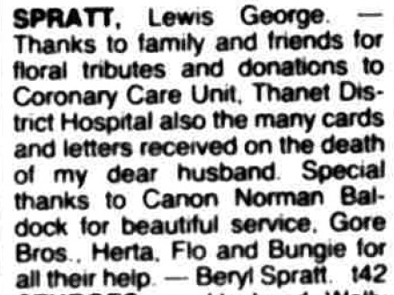
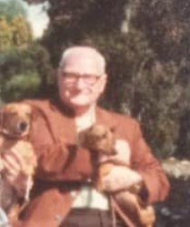

Lewis George Spratt 1907 - c1987
[ Home ] | [ Calendar ] | [ Surnames Index ] | [ Errors ] | [ Family History ]A chief stage electrician and window cleaner and the child of Leonard Spratt (an agricultural labourer) and Rose Dennett, Lewis Spratt, the first cousin once-removed on the father's side of Nigel Horne, was born in Northdown, Margate, Kent, England on 13 Sept 19071,2,3,4,5 and was married twice - to Violet Tong (c. Nov 1929 in Thanet, Kent, England) Barbara Parry (c. May 1945 in Cardiff, Glamorgan, Wales)6. He had 1 child with Violet Tong, Vidal J.
During his life, he was living at 11 Grotto Road, Cliftonville, Kent on 2 Apr 19118; at 10 De Burgh Street in Cardiff on 29 Sept 19392; and at 22 Buckingham Road, Margate, Kent in 19637.
He died c. Oct 1987 in Thanet4.
Parents
- Leonard was born on 9 Sept 1877
- Rose Ethel Muskett was born on 23 Jun 1887
Children
- Vidal J was born c. Aug 1933
Citations
- 1911 England Census Online publication - Provo, UT, USA: Ancestry.com Operations, Inc., 2011.Original data - Census Returns of England and Wales, 1911. Kew, Surrey, England: The National Archives of the UK (TNA), 1911. Data imaged from the National Archives, London, England.
- 1939 Register - Findmypast (was recorded at this address)
- England & Wales deaths 1837-2007 - Findmypast
- England & Wales, Death Index: 1984-2005 Online publication - Provo, UT, USA: The Generations Network, Inc., 2007.Original data - General Register Office. England and Wales Civil Registration Indexes. London, England: General Register Office. © Crown copyright. Published by permission of the Cont
- England & Wales, FreeBMD Birth Index, 1837-1915 Online publication - Provo, UT, USA: The Generations Network, Inc., 2006.Original data - General Register Office. England and Wales Civil Registration Indexes. London, England: General Register Office. © Crown copyright. Published by permission of the Cont
- England & Wales, Marriage Index: 1916-2005 Online publication - Provo, UT, USA: The Generations Network, Inc., 2009.Original data - General Register Office. England and Wales Civil Registration Indexes. London, England: General Register Office. © Crown copyright. Published by permission of the Cont
- 1963 Kelly's Thanet Directory
- 1911 Census for England & Wales - Findmypast (was age 3 and the son of the head of the household)
Notes
Lewis Spratt was a stage electrician who was lighting head at the New Theatre Cardiff where he told me he had a run-in with Lawrence Olivier (as he then was) who one day after a performance of "King Lear" said to Lew, "Well Sparks, what didyou think of that?" Lew disliked the man and merely said that he thought John Gielgud had played in much better a few months before. Olivier could do nothing because he knew if he upset Lew (who had a notoriously short temper) that thespotlight would miss him in future performances. Lew then became Head of Lighting at The Coliseum London but eventually had to give up the work he loved because his eyesight had deteriorated so much. Lew ended up a window cleaner in Margate, he and his wife Beryl had their family at their home in 1953 to watch the Coronation on their 9" television.
Media
1963 Kelly's Thanet Directory

Thanet Times - 13 Oct 1987

Lewis George Spratt

1939 Register Transcription - TNA-R39-7262-7262G-012-39
England & Wales deaths 1837-2007 Transcription - BMD-D-1987-10-76404386
England & Wales births 1837-2006 Transcription - BMD-B-1907-4-AZ-000531-143
1911 England, Wales & Scotland Census Transcription - GBC-1911-RG14-04496-0591-3
England & Wales marriages 1837-2008 Transcription - BMD-M-1929-4-AZ-001150-098
England & Wales marriages 1837-2008 Transcription - BMD-M-1945-2-AZ-001363-062
Family Tree
Map
Generated by ged2site. Last updated on Jul 3, 2024
Known Issues
Listed in the residence for 29 Sep 1939, but spouse Violet Tong is not
Listed in the residence for 1963, but spouse Violet Tong is not